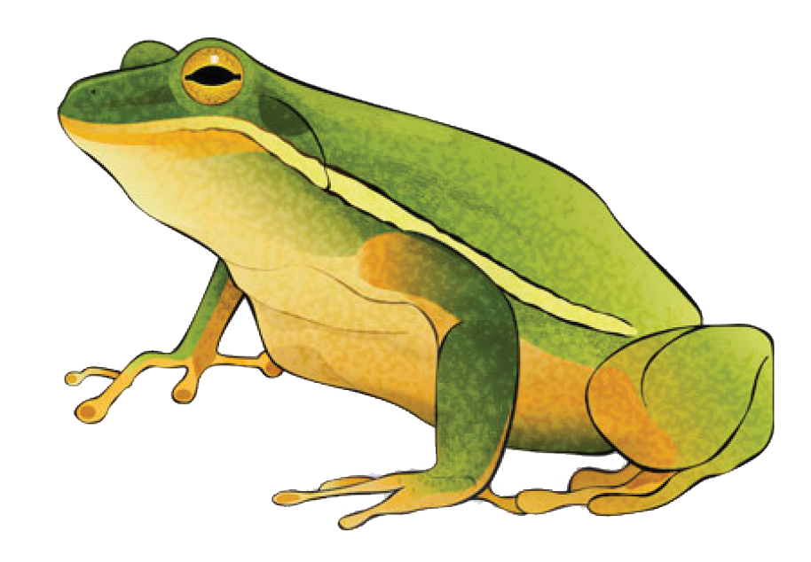
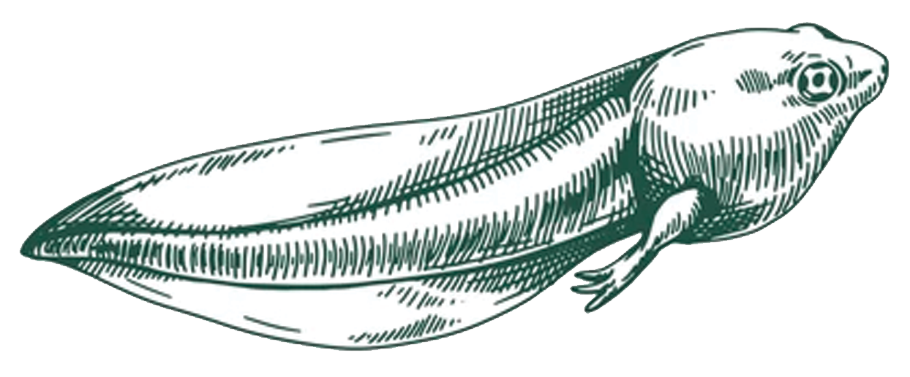
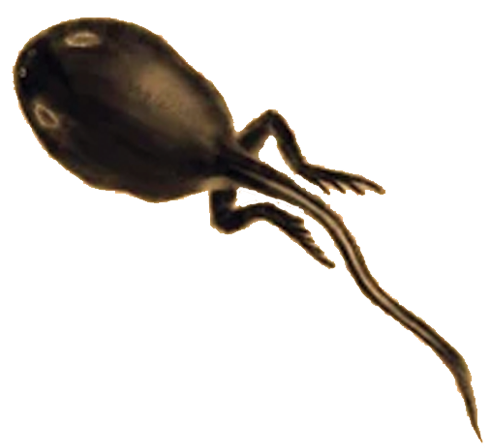
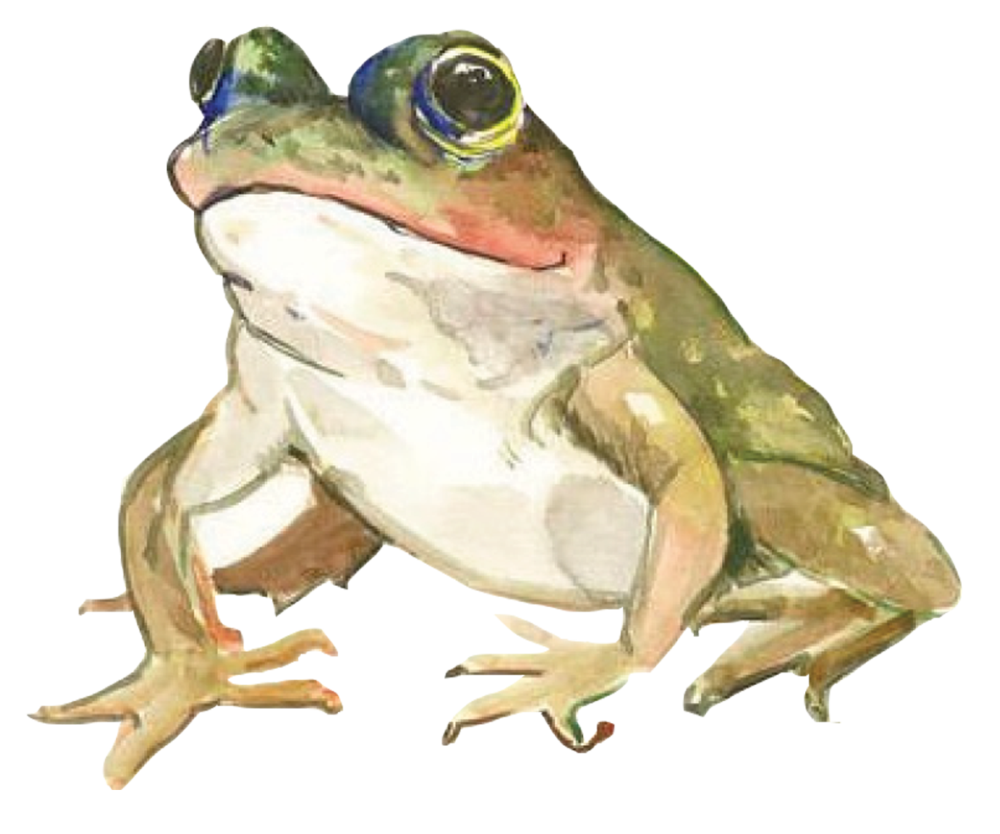
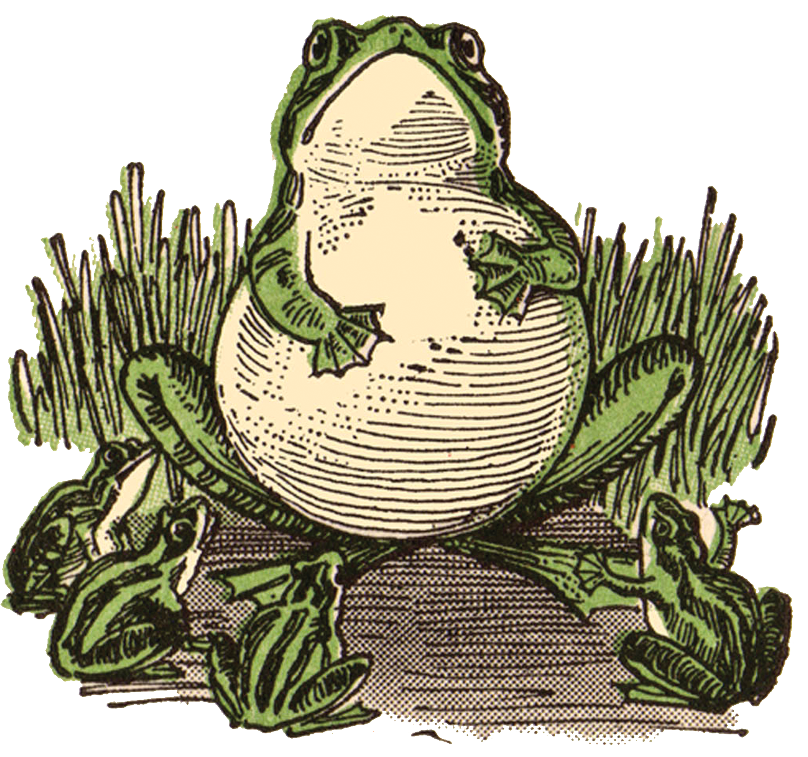
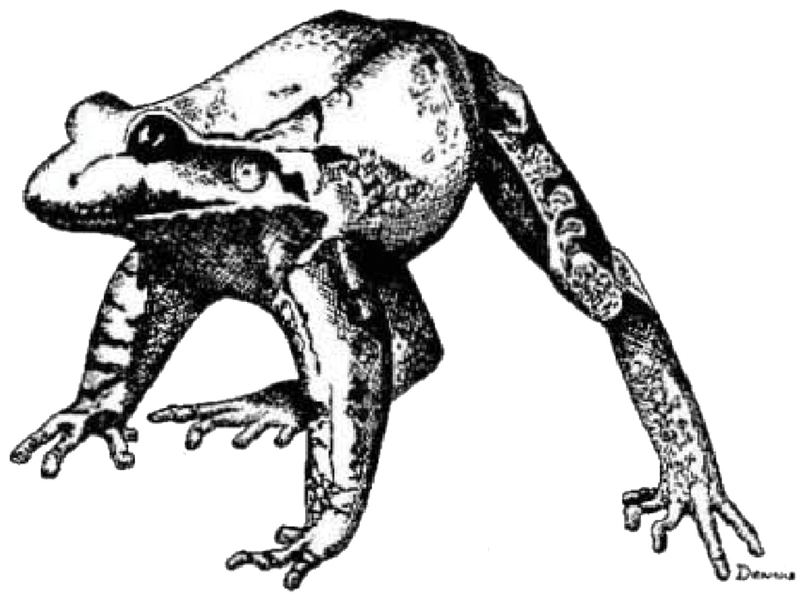

 A frog is any member of a diverse and largely carnivorous group of short-bodied, tailless amphibians composing the order Anura (literally without tail in Ancient Greek). The oldest fossil "proto-frog" Triadobatrachus is known from the Early Triassic of Madagascar, but molecular clock dating suggests their split from other amphibians may extend further back to the Permian, 265 million years ago. Frogs are widely distributed, ranging from the tropics to subarctic regions, but the greatest concentration of species diversity is in tropical rainforest. Frogs account for around 88% of extant amphibian species. They are also one of the five most diverse vertebrate orders. Warty frog species tend to be called toads, but the distinction between frogs and toads is informal, not from taxonomy or evolutionary history. An adult frog has a stout body, protruding eyes, anteriorly-attached tongue, limbs folded underneath, and no tail (the tail of tailed frogs is an extension of the male cloaca). Frogs have glandular skin, with secretions ranging from distasteful to toxic. Their skin varies in colour from well-camouflaged dappled brown, grey and green to vivid patterns of bright red or yellow and black to show toxicity and ward off predators. Adult frogs live in fresh water and on dry land; some species are adapted for living underground or in trees.
Frogs can be found on every continent except Antarctica. They thrive in a large number of environments from tropical forests to frozen tundras to deserts. Their skin requires freshwater, so most frogs live in aquatic and swampy habitats. There are a number of exceptions, including the waxy tree frog, which can be found in the arid region of Gran Chaco of South America. Waxy tree frogs produce a waxy substance that they rub all over their skin to prevent evaporation.
Eggs/Frog Spawn:
Frogs' embryos are typically surrounded by several layers of gelatinous material. When several eggs are clumped together, they are collectively known as frogspawn. The jelly provides support and protection while allowing the passage of oxygen, carbon dioxide and ammonia. It absorbs moisture and swells on contact with water. After fertilization, the innermost portion liquifies to allow free movement of the developing embryo. In certain species, such as the Northern red-legged frog (Rana aurora) and the wood frog (Rana sylvatica), symbiotic unicellular green algae are present in the gelatinous material. It is thought that these may benefit the developing larvae by providing them with extra oxygen through photosynthesis.[136] Most eggs are black or dark brown and this has the advantage of absorbing warmth from the sun which the insulating capsule retains. The interior of globular egg clusters of the wood frog (Rana sylvatica) has been found to be up to 6 °C (11 °F) warmer than the surrounding water and this speeds up the development of the larvae.
Tadpoles:
The larvae that emerge from the eggs, known as tadpoles (or occasionally polliwogs), typically have oval bodies and long, vertically flattened tails. As a general rule, free-living larvae are fully aquatic, but at least one species (Nannophrys ceylonensis) has semiterrestrial tadpoles which live among wet rocks.Tadpoles lack eyelids and have cartilaginous skeletons, lateral line systems, gills for respiration (external gills at first, internal gills later), and vertically flattened tails they use for swimming.
Metamorphisis:
At the end of the tadpole stage, a frog undergoes metamorphosis in which its body makes a sudden transition into the adult form. This metamorphosis typically lasts only 24 hours, and is initiated by production of the hormone thyroxine. This causes different tissues to develop in different ways. The principal changes that take place include the development of the lungs and the disappearance of the gills and gill pouch, making the front legs visible. The lower jaw transforms into the big mandible of the carnivorous adult, and the long, spiral gut of the herbivorous tadpole is replaced by the typical short gut of a predator. The nervous system becomes adapted for hearing and stereoscopic vision, and for new methods of locomotion and feeding. The eyes are repositioned higher up on the head and the eyelids and associated glands are formed. The eardrum, middle ear, and inner ear are developed. The skin becomes thicker and tougher, the lateral line system is lost, and skin glands are developed. The final stage is the disappearance of the tail, but this takes place rather later, the tissue being used to produce a spurt of growth in the limbs. Frogs are at their most vulnerable to predators when they are undergoing metamorphosis. At this time, the tail is being lost and locomotion by means of limbs is only just becoming established.

Adults:
After metamorphosis, young adults may disperse into terrestrial habitats or continue to live in water. Almost all frog species are carnivorous as adults, preying on invertebrates, including arthropods, worms, snails, and slugs. A few of the larger ones may eat other frogs, small mammals, and fish. Some frogs use their sticky tongues to catch fast-moving prey, while others push food into their mouths with their hands.
 Two main types of reproduction occur in frogs, prolonged breeding and explosive breeding. In the former, adopted by the majority of species, adult frogs at certain times of year assemble at a pond, lake or stream to breed. Many frogs return to the bodies of water in which they developed as larvae. This often results in annual migrations involving thousands of individuals. In explosive breeders, mature adult frogs arrive at breeding sites in response to certain trigger factors such as rainfall occurring in an arid area. In these frogs, mating and spawning take place promptly and the speed of larval growth is rapid in order to make use of the ephemeral pools before they dry up.
 At first sight, frogs seem rather defenceless because of their small size, slow movement, thin skin, and lack of defensive structures, such as spines, claws or teeth. Many use camouflage to avoid detection, the skin often being spotted or streaked in neutral colours that allow a stationary frog to merge into its surroundings. Some can make prodigious leaps, often into water, that help them to evade potential attackers, while many have other defensive adaptations and strategies. The skin of many frogs contains mild toxic substances called bufotoxins to make them unpalatable to potential predators. Most toads and some frogs have large poison glands, the parotoid glands, located on the sides of their heads behind the eyes and other glands elsewhere on their bodies. These glands secrete mucus and a range of toxins that make frogs slippery to hold and distasteful or poisonous. If the noxious effect is immediate, the predator may cease its action and the frog may escape. If the effect develops more slowly, the predator may learn to avoid that species in future. Poisonous frogs tend to advertise their toxicity with bright colours, an adaptive strategy known as aposematism.
Information for this website was found on: https://en.wikipedia.org/wiki/Frog and https://www.pbs.org/